Pre-requisites: Expressions and Equations
For ACT Students
The ACT is a timed exam...$60$ questions for $60$ minutes
This implies that you have to solve each question in one minute.
Some questions will typically take less than a minute a solve.
Some questions will typically take more than a minute to solve.
The goal is to maximize your time. You use the time saved on those questions you
solved in less than a minute, to solve the questions that will take more than a minute.
So, you should try to solve each question correctly and timely.
So, it is not just solving a question correctly, but solving it correctly on time.
Please ensure you attempt all ACT questions.
There is no negative penalty for any wrong answer.
For JAMB and CMAT Students
Calculators are not allowed. So, the questions are solved in a way that does not require a calculator.
Unless specified otherwise:
Solve, Check, and Graph these inequalities.
Write each solution in set notation.
Write each solution in interval notation.
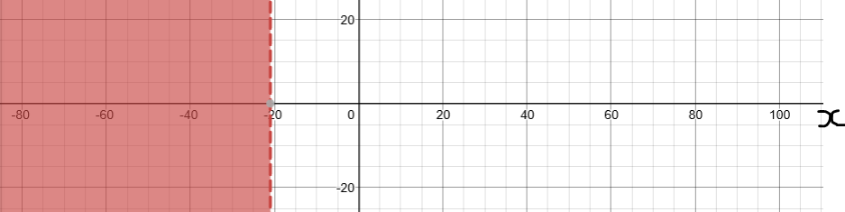
| $ \underline{LHS} \\[3ex] x + 18 \\[3ex] x \lt -21 \\[3ex] Let\:\: x = -25 \\[3ex] -25 + 18 \\[3ex] -25 + 18 \\[3ex] -7 $ | $ \underline{RHS} \\[3ex] -3 $ |
| $-7 \lt -3$ | |
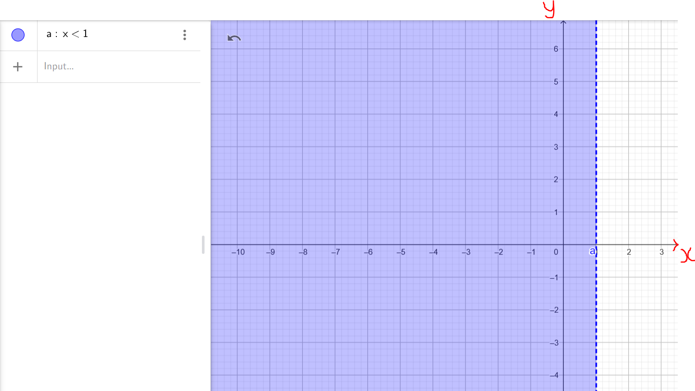
| LHS | RHS |
|---|---|
| $ 3x + 5 \\[3ex] 3(0) + 5 \\[3ex] 0 + 5 \\[3ex] 5 $ | $8$ |
| $5 \lt 8$ | |
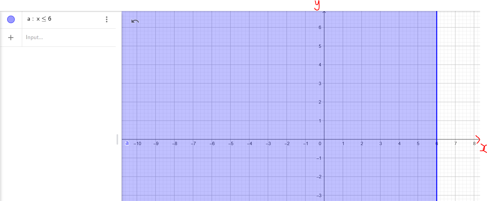
| LHS | RHS |
|---|---|
| $ -2x - 4 \\[3ex] -2(0) - 4 \\[3ex] 0 - 4 \\[3ex] -4 $ | $ 8 - 4x \\[3ex] 8 - 4(0) \\[3ex] 8 - 0 \\[3ex] 8 $ |
| $-4 \le 8$ | |
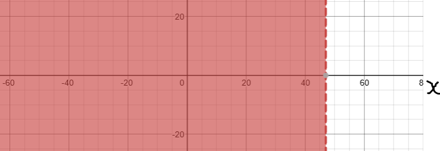
| $ \underline{LHS} \\[3ex] 6(x + 2) \\[5ex] x \lt 47 \\[3ex] Let\:\: x = 0 \\[3ex] 6(0 + 2) \\[3ex] = 6(2) \\[3ex] = 12 $ | $ \underline{RHS} \\[3ex] 7(x - 5) \\[3ex] Must\:\: use\:\: x = 0 \\[3ex] = 7(0 - 5) \\[3ex] = 7(-5) \\[3ex] = -35 $ |
| $12 \gt -35$ | |
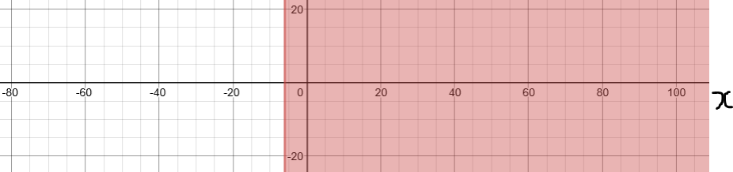
| LHS | RHS |
|---|---|
| $ 2x + 4 \\[3ex] x \ge -6 \\[3ex] Let\:\: x = 0 \\[3ex] 2(0) + 4 \\[3ex] 0 + 4 \\[3ex] 4 $ | $-8$ |
| $4 \ge -8$ | |
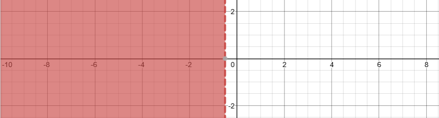
| $ \underline{LHS} \\[3ex] 7x + 4 \\[5ex] x \lt -\dfrac{1}{2} \\[5ex] Let\:\: x = -1 \\[3ex] 7(-1) + 4 \\[3ex] = -7 + 4 \\[3ex] = -3 $ | $ \underline{RHS} \\[3ex] \dfrac{1}{2}(4x + 3) \\[5ex] Must\:\: use\:\: x = -1 \\[3ex] \dfrac{1}{2}(4(-1) + 3)) \\[5ex] = \dfrac{1}{2}(-4 + 3) \\[5ex] = \dfrac{1}{2} * -1 \\[5ex] = -\dfrac{1}{2} $ |
| $-3 \lt -\dfrac{1}{2}$ | |
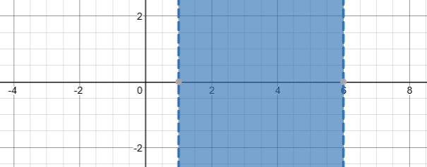
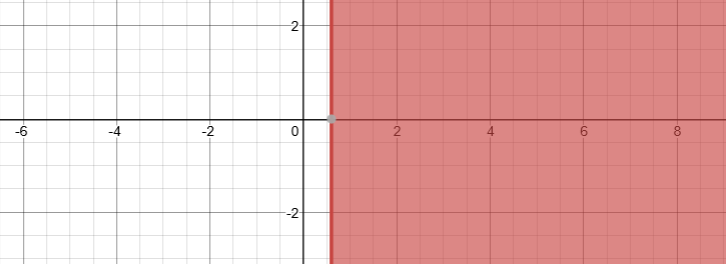
| $ \underline{LHS} \\[3ex] -6 + 7k \\[5ex] k \ge \dfrac{3}{5} \\[5ex] Let\:\: k = 1 \\[3ex] -6 + 7(1) \\[3ex] = -6 + 7 \\[3ex] = 1 $ | $ \underline{RHS} \\[3ex] 3 - 8k \\[3ex] Must\:\: use\:\: k = 1 \\[3ex] 3 - 8(1) \\[3ex] = 3 - 8 \\[3ex] = -5 $ |
| $1 \ge -5$ | |
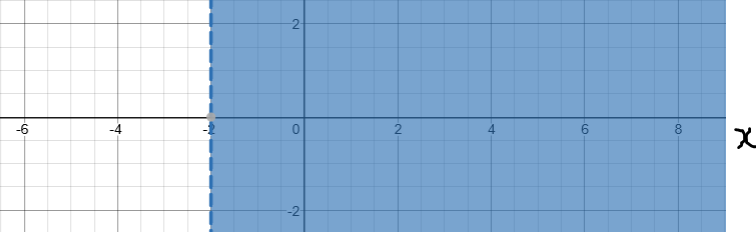
| $ \underline{LHS} \\[3ex] 3x - 7 \\[3ex] x \gt -2 \\[3ex] Let\:\: x = 0 \\[3ex] 3(0) - 7 \\[3ex] = 0 - 7 \\[3ex] = -7 $ | $ \underline{RHS} \\[3ex] 5 + 9x \\[3ex] Must\:\: use\:\: x = 0 \\[3ex] 5 + 9(0) \\[3ex] = 5 + 0 \\[3ex] = 5 $ |
| $-7 \lt 5$ | |
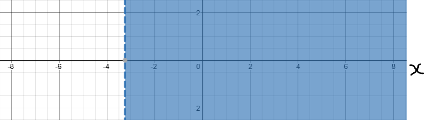
| $ \underline{LHS} \\[3ex] 6x - 6 \\[3ex] x \gt -\dfrac{13}{4} \\[5ex] Let\:\: x = 1 \\[3ex] 6(1) - 6 \\[3ex] = 6 - 6 \\[3ex] = 0 $ | $ \underline{RHS} \\[3ex] 7 + 10x \\[3ex] Must\:\: use\:\: x = 1 \\[3ex] 7 + 10(1) \\[3ex] = 7 + 10 \\[3ex] = 17 $ |
| $0 \lt 17$ | |
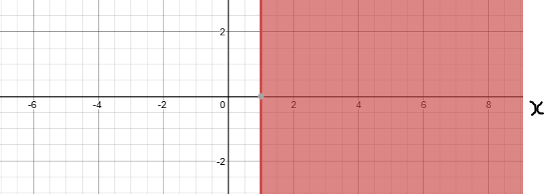
| LHS | RHS |
|---|---|
| $ 8 - x \\[3ex] x \ge 1 \\[3ex] Let\:\: x = 3 \\[3ex] 8 - 3 \\[3ex] = 5 $ | $ 5x + 2 \\[3ex] Must\:\: use\:\: x = 3 \\[3ex] 5(3) + 2 \\[3ex] = 15 + 2 \\[3ex] = 17 $ |
| $5 \le 17$ | |
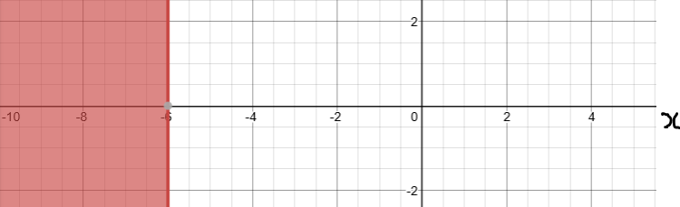
| LHS | RHS |
|---|---|
|
$
7(x + 4) - \dfrac{2}{3}(x - 6) \\[5ex]
x \le -6 \\[3ex]
Let\:\: x = -9 \\[3ex]
$
Student: Why did you choose $-9$ Teacher: Because I want a number that is divisible by $3$ $-9 - 6 = -15$ $-15$ is divisible by $3$ Student: Could you not have chosen $-6$? Because $-6 \le -6$ Teacher: I could have. However, I do not want to check my solution as an equation. $ 7(-9 + 4) - \dfrac{2}{3}(-9 - 6) \\[5ex] = 7(-5) - \dfrac{2}{3}(-15) \\[5ex] = -35 - 2(-5) \\[3ex] = -35 + 10 \\[3ex] = -25 $ |
$ 2[x - 3(x + 5)] \\[3ex] Must\:\: use\:\: x = -9 \\[3ex] = 2[-9 - 3(-9 + 5)] \\[3ex] = 2[-9 - 3(-4)] \\[3ex] = 2[-9 + 12] \\[3ex] = 2(3) \\[3ex] = 6 $ |
| $-25 \le 6$ | |
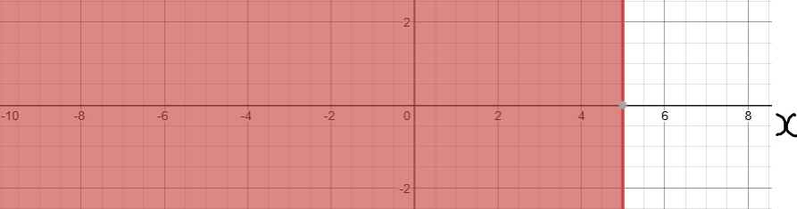
| LHS | RHS |
|---|---|
| $ 2x - 7 \\[5ex] 2(0) - 7 \\[3ex] 0 - 7 \\[3ex] -7 $ | $3$ |
| $-7 \le 3$ | |